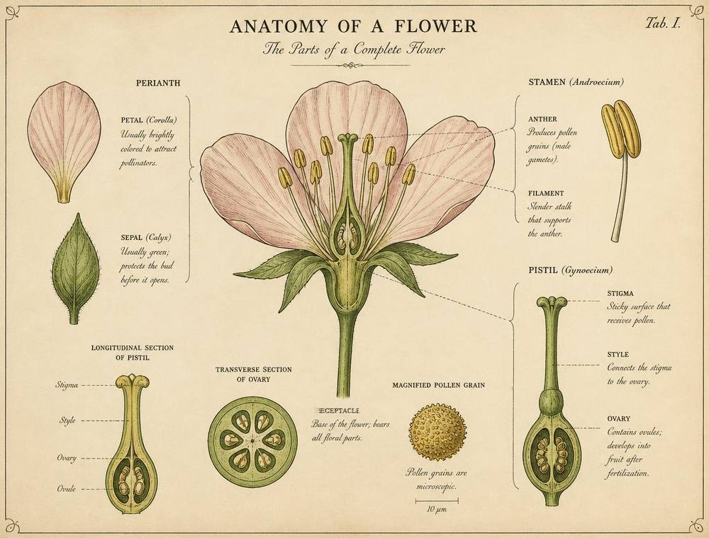
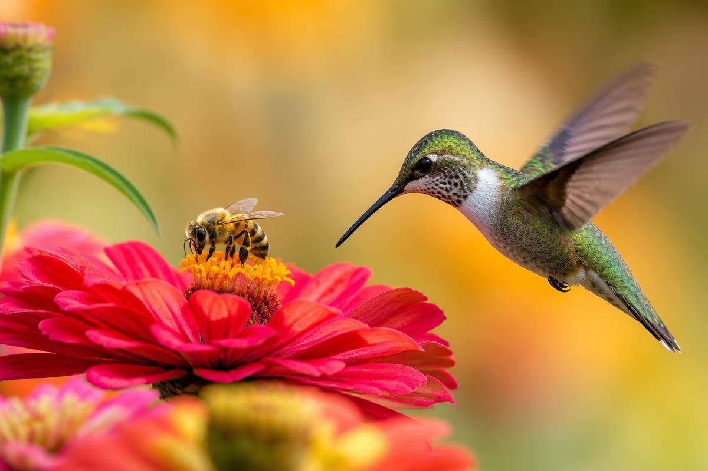

Ponto de partida
Antes de tudo: a especialidade de Flores
O nível avançado só faz sentido sobre um alicerce: a Especialidade de Flores (básica). Nela se aprende o vocabulário que usaremos o tempo todo aqui — partes da flor, tipos de inflorescência, corte e conservação, coleta responsável e o cuidado com espécies ameaçadas.
O material completo de apoio para o requisito básico está disponível neste artigo:
Consulte: Especialidade de Flores

Morfologia floral
Flores perfeitas e imperfeitas, pistiladas e estaminadas
Toda a diferença está em quais órgãos reprodutivos a flor carrega. Antes de comparar, vale relembrar o mapa da flor.
Cálice
Conjunto de sépalas, geralmente verdes; protegem o botão.
Corola
Conjunto de pétalas, coloridas e perfumadas; atraem polinizadores.
Androceu
Estames = antera (pólen) + filete. Parte masculina.
Gineceu
Pistilo/carpelo = estigma + estilete + ovário. Parte feminina.
Flor perfeita (hermafrodita / monoclina)
Possui estames e pistilo na mesma flor. É a maioria das angiospermas (cerca de 90%).
Exemplos:
- Rosa (Rosa spp.)
- Tulipa (Tulipa gesneriana)
- Ervilha e feijão (Pisum sativum, Phaseolus vulgaris)
- Hibisco (Hibiscus rosa-sinensis)
- Tomateiro (Solanum lycopersicum), macieira (Malus domestica), lírio (Lilium spp.)
Cuidado com a confusão: flor perfeita fala dos órgãos sexuais; flor completa exige as quatro peças (sépalas, pétalas, estames e pistilo). Toda flor completa é perfeita, mas nem toda flor perfeita é completa — o lírio, por exemplo, tem tépalas em vez de cálice e corola distintos.
Flor imperfeita (unissexuada / diclina)
Possui apenas estames ou apenas pistilo. Divide-se em:
- Estaminada (masculina): só estames, produz pólen.
- Pistilada (feminina): só pistilo, produz óvulos e depois o fruto.
Exemplos:
- Milho (Zea mays) — o pendão no topo é estaminado; a espiga com os "cabelos" (estiletes) é pistilada. Planta monoica.
- Abóbora e melancia (Cucurbita pepo, Citrullus lanatus) — flor feminina reconhecível pelo ovário inchado atrás da pétala.
- Mamoeiro (Carica papaya) e salgueiro (Salix) — plantas dioicas: pés machos e pés fêmeas separados.
- Begônia (Begonia spp.) e bico-de-papagaio (Euphorbia pulcherrima).
Requisito prático
Usando uma chave dicotômica de identificação
Uma chave de identificação é uma sequência de escolhas entre duas alternativas (por isso "dicotômica"). A cada par você elimina metade das possibilidades, até chegar ao grupo ou espécie. É o mesmo raciocínio de um jogo de perguntas de "sim ou não" — só que com o olhar treinado do botânico.
Chave simplificada para plantas com flores do jardim
-
a. Folhas com nervuras paralelas, peças florais em múltiplos de 3 …… Monocotiledônea →
vá para 2
b. Folhas com nervuras reticuladas, peças florais em múltiplos de 4 ou 5 …… Dicotiledônea → vá para 3 -
a. Flor grande, 6 tépalas livres, bulbo subterrâneo …… Liliaceae (lírio,
tulipa)
b. Flor muito assimétrica, com labelo e coluna …… Orchidaceae (orquídeas) -
a. Flores minúsculas reunidas em capítulo que parece "uma flor só" …… Asteraceae
(girassol, margarida)
b. Flores individualizadas, não em capítulo …… vá para 4 -
a. Corola zigomorfa tipo borboleta (estandarte, alas, quilha); fruto legume …… Fabaceae
(ervilha, flamboyant)
b. Corola actinomorfa (radialmente simétrica) …… vá para 5 -
a. 4 pétalas em cruz, 6 estames (4 longos + 2 curtos) …… Brassicaceae
(mostarda,
alisso)
b. 5 pétalas soldadas em tubo ou funil …… vá para 6 -
a. 5 estames com anteras unidas em cone, fruto baga ou cápsula …… Solanaceae (petúnia,
dama-da-noite)
b. Muitos estames livres, coluna estaminal saliente …… Malvaceae (hibisco)
Como demonstrar essa habilidade ao instrutor
- Colete a amostra completa: flor, folha e, se possível, fruto — chaves quase sempre pedem características vegetativas e reprodutivas.
- Observe com lupa (10×): conte pétalas, sépalas, estames e carpelos; anote se são livres ou soldados.
- Registre a simetria: actinomorfa (radial, como a petúnia) ou zigomorfa (bilateral, como a ervilha e a orquídea).
- Verifique a posição do ovário: súpero (acima do ponto de inserção) ou ínfero (abaixo, como nas Asteraceae).
- Siga a chave em voz alta, justificando cada escolha; depois confirme com uma segunda fonte (flora regional, herbário virtual como REFLORA, ou aplicativos como PlantNet).
- Escreva a fórmula floral, ex.: Hibiscus → K5 C5 A∞ G(5).
Fórmula floral em 30 segundos
K = cálice (sépalas) · C = corola (pétalas) · A = androceu (estames) · G = gineceu (carpelos). Números entre parênteses indicam peças soldadas; ∞ significa "muitos"; uma linha sobre o G indica ovário ínfero.
Duas grandes classes
Monocotiledôneas × Dicotiledôneas
As angiospermas — plantas com flor e semente protegida no fruto — dividem-se classicamente em Liliopsida (monocotiledôneas, ~70 mil espécies) e Magnoliopsida (dicotiledôneas, ~200 mil espécies).
| Característica | Monocotiledôneas (Liliopsida) | Dicotiledôneas (Magnoliopsida) |
|---|---|---|
| Formação floral | Peças florais em múltiplos de 3 (3 ou 6 tépalas). Muitas vezes cálice e corola indistinguíveis (tépalas). | Peças florais em múltiplos de 4 ou 5. Cálice e corola geralmente bem distintos. |
| Cotilédones | Apenas 1 cotilédone na semente. | 2 cotilédones na semente. |
| Nervuras da folha | Paralelinérvea (nervuras paralelas). | Reticulada / peninérvea (nervuras ramificadas em rede). |
| Raiz | Fasciculada (cabeleira), sem raiz principal. | Axial/pivotante, com raiz principal evidente. |
| Feixes vasculares no caule | Espalhados de forma difusa. | Organizados em anel; permitem crescimento secundário. |
| Pólen | Monossulcado (uma abertura). | Tricolpado (três aberturas). |
| Exemplos | Milho, orquídea, lírio, bananeira, palmeira, grama. | Rosa, girassol, feijão, ipê, laranjeira, hibisco. |
Pesquisa de campo
Famílias de dicotiledôneas
Asteraceae (Compositae)
A maior família de plantas com flor (~32.000 espécies). O que parece "uma flor" é na verdade um capítulo: dezenas ou centenas de flores minúsculas (flores do raio, liguladas; e flores do disco, tubulosas) sobre um receptáculo comum. Ovário ínfero, fruto tipo aquênio, muitas vezes com papilho para dispersão pelo vento.
Girassol – Helianthus annuusMargarida – Bellis perennisCrisântemo – Chrysanthemum morifoliumDália – Dahlia pinnataCalêndula – Calendula officinalis
Rosaceae
Flores geralmente com 5 pétalas livres, 5 sépalas e numerosos estames dispostos em círculo sobre um hipanto. Folhas com estípulas. Famosa por reunir ornamentais e frutíferas de grande valor econômico.
Rosa – Rosa spp.Macieira – Malus domesticaCerejeira – Prunus serrulataMorangueiro – Fragaria × ananassaPereira – Pyrus communis
Fabaceae (Leguminosae)
Corola papilionácea (estandarte, duas alas e a quilha), 10 estames e fruto do tipo legume (vagem). Muitas espécies fixam nitrogênio pela simbiose com bactérias Rhizobium em nódulos radiculares — verdadeiras adubadoras naturais do solo.
Ervilha – Pisum sativumFlamboyant – Delonix regiaIpê-mirim/Sibipiruna – Caesalpinia pluviosaFeijão – Phaseolus vulgarisMimosa – Mimosa pudica
Solanaceae
Corola gamopétala com 5 lobos, 5 estames aderidos ao tubo, ovário súpero com dois carpelos; fruto baga ou cápsula. Família rica em alcaloides — daí tanto alimentos importantes quanto plantas altamente tóxicas.
Petúnia – Petunia × hybridaDama-da-noite – Cestrum nocturnumTrombeteira – Brugmansia suaveolensTomate – Solanum lycopersicumBatata – Solanum tuberosum
Malvaceae
Cinco pétalas assimétricas em espiral, estames soldados num tubo (coluna estaminal) que envolve o estilete — arranjo inconfundível. Muitas têm epicálice e pelos estrelados nas folhas.
Hibisco – Hibiscus rosa-sinensisAlgodoeiro – Gossypium hirsutumMalva – Malva sylvestrisPaineira – Ceiba speciosaCacaueiro – Theobroma cacao
Lamiaceae (Labiatae)
Caule quadrangular, folhas opostas e cruzadas, corola bilabiada (dois lábios) e óleos essenciais aromáticos em glândulas — por isso a família das ervas de tempero e dos perfumes. Fruto esquizocárpico com 4 núculas.
Lavanda – Lavandula angustifoliaSálvia – Salvia splendensManjericão – Ocimum basilicumAlecrim – Salvia rosmarinusHortelã – Mentha spp.
Famílias de monocotiledôneas
Orchidaceae
Com ~28.000 espécies, disputa com as Asteraceae o posto de maior família botânica. Flor zigomorfa com uma pétala modificada, o labelo, que serve de pista de pouso; estames e pistilo fundidos numa estrutura única, a coluna (ginostêmio); pólen aglomerado em polínias. Sementes minúsculas, como poeira, que dependem de fungos micorrízicos para germinar.
Cattleya – Cattleya labiataOrquídea-borboleta – Phalaenopsis amabilisBaunilha – Vanilla planifoliaChuva-de-ouro – Oncidium varicosum
Liliaceae
Flores vistosas com 6 tépalas (3+3), 6 estames e ovário súpero tricarpelar; folhas paralelinérveas e órgãos subterrâneos de reserva (bulbos). Padrão trímero clássico das monocotiledôneas.
Lírio – Lilium candidumTulipa – Tulipa gesnerianaFritilária – Fritillaria meleagrisLírio-tigre – Lilium lancifolium
Poaceae (Gramineae)
As gramíneas: flores sem pétalas coloridas, reduzidas e protegidas por brácteas (lema e pálea) reunidas em espiguetas. Polinização pelo vento (anemofilia), anteras pendulares e estigmas plumosos. Caule oco (colmo) com nós. É a família que alimenta o mundo.
Milho – Zea maysArroz – Oryza sativaTrigo – Triticum aestivumCapim-dos-pampas – Cortaderia selloana
Arecaceae (Palmae)
As palmeiras: estipe não ramificado, folhas grandes pinadas ou palmadas, e flores pequenas e trímeras reunidas em enormes inflorescências protegidas por uma espata. Frequentemente monoicas ou dioicas; fruto drupa.
Coqueiro – Cocos nuciferaTamareira – Phoenix dactyliferaAçaizeiro – Euterpe oleraceaPalmeira-imperial – Roystonea oleracea
Coleção do requisito
Espécies de flores — nome popular e científico
Monte sua coleção com fotografias suas sempre que possível (registre data e local). Esta lista serve de roteiro: espécies comuns em jardins, praças e no campo brasileiro, com o nome popular e o binômio científico correto — gênero com inicial maiúscula, epíteto em minúscula, ambos em itálico.
Segurança no jardim
Plantas com flores venenosas
Beleza e perigo às vezes moram na mesma planta. Conhecer a parte tóxica de cada espécie é parte da responsabilidade de quem cuida de um jardim — especialmente onde há crianças e animais.
Nerium oleander
Parte tóxica: a planta inteira — folhas, flores, caule, sementes e até a fumaça da queima e a água do vaso.
Princípio ativo: glicosídeos cardíacos (oleandrina). Provocam vômito, cólicas e arritmias graves. Uma única folha pode ser fatal para uma criança.
Dieffenbachia seguine
Parte tóxica: a seiva de todas as partes, sobretudo caule e folhas.
Princípio ativo: cristais de oxalato de cálcio (ráfides). Ao mastigar, causam dor intensa, edema de língua e garganta — podendo obstruir a respiração.
Zantedeschia aethiopica
Parte tóxica: folhas, rizoma e a espata (a "flor" branca).
Princípio ativo: oxalato de cálcio; queimação na boca, salivação intensa e edema.
Brugmansia suaveolens
Parte tóxica: flores, folhas e sementes.
Princípio ativo: alcaloides tropânicos (atropina, escopolamina). Causam alucinações, taquicardia, midríase e podem levar ao coma.
Digitalis purpurea
Parte tóxica: folhas (principalmente), flores e sementes.
Princípio ativo: digitoxina/digoxina. Em dose controlada é remédio cardíaco; fora dela provoca bradicardia, distúrbios visuais e parada cardíaca.
Euphorbia pulcherrima
Parte tóxica: o látex branco que escorre do caule e das folhas cortadas.
Princípio ativo: ésteres de forbol; irritação da pele, conjuntivite se atingir o olho, náusea e vômito se ingerido.
Ricinus communis
Parte tóxica: as sementes (dentro do fruto espinhoso).
Princípio ativo: ricina, uma das toxinas naturais mais potentes conhecidas. Poucas sementes mastigadas podem ser letais.
Convallaria majalis
Parte tóxica: toda a planta — flores, folhas, frutos vermelhos e até a água do vaso.
Princípio ativo: convalatoxina (glicosídeo cardíaco); vômitos, tontura e arritmia.
Bônus: mais três para conhecer
- Acônito (Aconitum napellus) — raiz e folhas; aconitina, absorvida até pela pele.
- Azaleia (Rhododendron simsii) — folhas, flores e néctar; graianotoxina (existe até "mel louco").
- Coroa-de-cristo (Euphorbia milii) — látex irritante, além dos espinhos.
Em caso de acidente
- Não provoque vômito nem ofereça leite por conta própria.
- Lave a boca com água e retire restos da planta.
- Leve uma amostra da planta ao atendimento para identificação.
- Brasil: Centro de Informação Toxicológica — 0800 722 6001; emergência SAMU 192.
- Prevenção: luvas ao podar espécies com látex e mãos lavadas depois de manusear qualquer planta desconhecida.
Lições espirituais
As flores no livro do Criador
"Considerai os lírios do campo, como crescem; não trabalham, nem fiam. E eu vos digo que nem mesmo Salomão, em toda a sua glória, se vestiu como qualquer deles."Mateus 6:28-30
1. A providência que veste o campo
Jesus usa a flor silvestre — que ninguém plantou, ninguém regou e que dura poucos dias — como argumento contra a ansiedade. Se o Criador investe tanto capricho de cor, simetria e perfume em algo tão passageiro, quanto mais cuidará de Seus filhos. É um convite a confiar: a flor não produz sua beleza por esforço, ela a recebe. Assim é o caráter que Deus deseja formar em nós.
"Toda a carne é erva, e toda a sua glória como a flor do campo. Seca-se a erva, e cai a sua flor, mas a palavra de nosso Deus subsiste eternamente."Isaías 40:6-8 · citado em 1 Pedro 1:24-25
2. A fragilidade humana e a Palavra permanente
Isaías contempla a mesma flor sob outra luz: o vento quente do deserto passa e ela murcha em horas. A glória humana — força, fama, riqueza — tem a durabilidade de uma pétala. Só a Palavra de Deus permanece. Tiago 1:10-11 aplica isso ao rico que "passará como a flor da erva"; a lição não é pessimismo, é prioridade.
Mais flores na Bíblia
Cântico dos Cânticos 2:1 — "Eu sou a rosa de Sarom, o lírio dos vales": a imagem tradicionalmente aplicada a Cristo, beleza que floresce em lugar humilde.
O deserto florido
Isaías 35:1-2 — "o deserto se alegrará e florescerá como a rosa": promessa de restauração; onde Deus age, o solo estéril produz flores.
A vara de Arão
Números 17:8 — uma vara seca brotou, floresceu e deu amêndoas em uma noite: Deus confirma Sua escolha por meio de uma flor impossível.
No templo
1 Reis 6:18,29 — as paredes do templo foram esculpidas com botões de flores: a adoração emoldurada por motivos do jardim original.
O candelabro
Êxodo 25:31-34 — o candelabro de ouro tinha cálices em forma de flor de amendoeira: até a luz do santuário tinha desenho botânico.
De volta ao Éden
Gênesis 2:8-9 e Apocalipse 22:2 — a história começa em um jardim e termina em outro. O jardineiro que cuida de um canteiro está ensaiando a eternidade.
Perspectiva criacionista
Projeto, não acaso: o que a flor testemunha
Um dos maiores desafios reconhecidos pela própria biologia é a origem súbita das plantas com flor — o que Charles Darwin chamou, em carta a Joseph Hooker (1879), de "um abominável mistério": as angiospermas aparecem no registro fóssil já plenamente formadas e diversificadas, sem a longa série de intermediários que se esperaria.
Interdependência total
Flor e polinizador formam um sistema que só funciona completo. A Ophrys imita a fêmea de uma vespa específica; a figueira depende de uma vespa que só nasce dentro do figo; a orquídea-cometa de Madagascar tem néctar a 30 cm de profundidade e só é polinizada por uma mariposa com tromba do mesmo tamanho. Meio sistema não gera nem semente nem descendência.
Matemática nas pétalas
Sementes de girassol se organizam em espirais de 34, 55 e 89 — números de Fibonacci — segundo o ângulo áureo de 137,5°, o arranjo que maximiza a captação de luz e o empacotamento. Ordem matemática exata em um organismo que não sabe contar aponta para uma inteligência que sabe.
Beleza gratuita
Nenhuma teoria explica por que a flor precisaria ser bela para nós. O perfume da rosa, os degradês de uma orquídea e a simetria de uma dália excedem em muito o mínimo funcional. Como diz Salmos 19:1, a criação "proclama a glória de Deus" — e o jardim é a página mais colorida desse anúncio.
Requisito prático
Cultivo, polinizadores e diário de campo

Opção A — Plantar 2 sementes e acompanhar por 1 mês
Sugestão de dupla fácil e rápida: girassol anão (Helianthus annuus) e zínia (Zinnia elegans). Semeie a 1–2 cm de profundidade, em substrato leve, com sol pleno e rega diária pela manhã.
No relatório: data, altura em cm, nº de folhas, foto semanal e observações do clima.
Opção B — 4 espécies, seus polinizadores e cuidados
| Espécie | Polinizadores mais comuns | Cuidados |
|---|---|---|
| Girassol Helianthus annuus |
Abelhas Apis mellifera e mamangavas (Bombus) | Sol pleno 6–8 h, rega abundante, solo drenado, tutoramento em cultivares altas |
| Lavanda Lavandula angustifolia |
Abelhas, mamangavas e borboletas | Sol pleno, solo arenoso e alcalino, pouca água, poda após a floração |
| Helicônia Heliconia rostrata |
Beija-flores (ornitofilia) | Meia-sombra, umidade alta, solo rico em matéria orgânica |
| Dama-da-noite Cestrum nocturnum |
Mariposas noturnas (esfingídeos) | Sol/meia-sombra, rega moderada, poda de contenção; perfume forte à noite |
Opção C — Adotar um jardim
- Escolha o espaço (canteiro da igreja, floreira grande ou praça) e peça autorização por escrito.
- Faça a limpeza, corrija o solo com composto e defina o desenho dos canteiros.
- Escale a unidade em uma escala semanal: rega, capina, poda e registro fotográfico.
- Priorize espécies melíferas (lavanda, alecrim, zínia, cosmos) para criar um jardim de polinizadores.
- Ao final do mês, apresente um álbum "antes e depois" com a lista de espécies plantadas.
Síndromes de polinização
Melitofilia (abelhas): flores azuis/amarelas, com guias de néctar visíveis no ultravioleta. Ornitofilia (aves): vermelhas, tubulares, sem perfume, néctar abundante. Falenofilia (mariposas): brancas, perfumadas, abrem à noite. Anemofilia (vento): sem pétalas vistosas, muito pólen.
Como proteger polinizadores
Evite inseticidas neonicotinoides, ofereça água rasa com pedrinhas, mantenha floração escalonada o ano todo e deixe um canto do jardim "bagunçado" para abelhas solitárias nidificarem.
Erros comuns de cultivo
Regar em excesso (causa mais mortes que a seca), vaso sem furo de drenagem, adubo nitrogenado demais (muita folha, pouca flor) e transplantar em pleno sol do meio-dia.
Para ir além
Curiosidades do mundo das flores
A maior flor do mundo
Rafflesia arnoldii, da Indonésia, chega a 1 m de diâmetro e 10 kg. Não tem caule, folhas nem raízes — é parasita de cipós — e exala cheiro de carne podre para atrair moscas.
A menor
Wolffia, uma lentilha-d'água, tem menos de 1 mm: cabem dezenas na cabeça de um alfinete.
A febre das tulipas
Na Holanda de 1637, um único bulbo raro de tulipa chegou a valer o preço de uma casa em Amsterdã — a primeira bolha financeira registrada da história.
Flores que se movem
O girassol jovem faz heliotropismo, acompanhando o sol de leste a oeste e voltando à noite. Já adulto, fixa-se voltado para o nascente, aquecendo-se cedo e atraindo mais abelhas.
Visão ultravioleta
Muitas flores têm "pistas de pouso" invisíveis a nós, desenhadas em ultravioleta, que só as abelhas enxergam — sinalização feita sob medida para o visitante certo.
Floriografia
Na era vitoriana, cada flor tinha um significado: rosa vermelha (amor), lírio branco (pureza), miosótis (lembrança), alecrim (fidelidade). Presentear era escrever uma carta em pétalas.
Perfume por engenharia
São necessárias cerca de 3 toneladas de pétalas de Rosa damascena para produzir 1 kg de óleo essencial — daí seu preço superior ao do ouro por grama em certas safras.
Recordista de perfume
A Amorphophallus titanum (flor-cadáver) produz a maior inflorescência não ramificada do mundo, com até 3 m, e floresce por apenas 24 a 48 horas a cada muitos anos.
Baunilha e trabalho manual
A orquídea Vanilla planifolia só é polinizada naturalmente por uma abelha do México. Fora dali, cada flor é polinizada à mão, uma a uma — por isso a baunilha natural é tão cara.